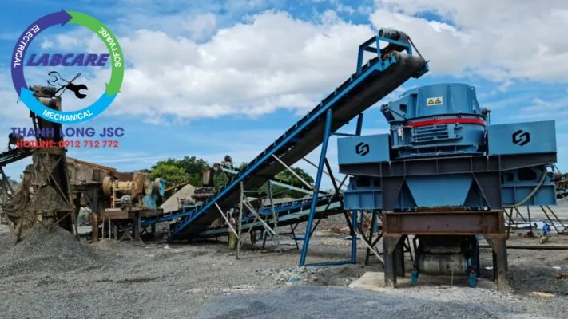

Hiện tại và những năm tới, cát nghiền là sản phẩm được sản xuất do trạm nghiền cát nhân tạo nhằm thay thế cho cát tự nhiên tại nhiều công trình xây dựng. Đồng thời, giải quyết được vấn đề thiếu cát trầm trọng khi mà cát tự nhiên ở mỏ cát, lòng sông, lòng suối đang bị thiếu hụt trầm trọng. Công trình xây dựng ngày càng mọc lên như nấm sau mưa.
Với công nghệ đá va đá ở tốc độ cao, làm cho đá bị vỡ ở mặt cắt yếu nhất của chính nó. Đặc tính này giúp sản phẩm luôn có hình dạng tròn và có độ ma sát thấp, giúp tăng tính linh hoạt cho bê tông, chất lượng bê tông tốt ổn định, giảm chi phí vật tư đáng kể.
Cát nghiền là gì ?
Cát nghiền là hỗn hợp các hạt cốt liệu có kích thước nhỏ hơn 5mm. Thu được do đập hoặc nghiền từ bất cứ loại đá nào có cường độ tốt, ổn định. Có thể dùng làm nguyên VLXD đều có thể làm nguyên vật liệu để sản xuất cát nhân tạo như: đá vôi, đá granite, cát kết, đá thạch anh, đá cuội, sỏi đồi, sỏi sông, mi sàng, mi bụi … có cấu trúc rắn chắc đến các kích thước hạt theo yêu cầu dùng để chế tạo bê tông và vữa.
Ứng dụng Cát nghiền
- Hầu hết các công trình thuỷ điện sử dụng hơn 90% cát nghiền cho cấp phối bê tông như: Thủy điện ialy, Thủy điện Hòa Bình, Thủy điện PleiKrông, Thủy điện Sê San, ….
- Đổ trụ bê tông, cống bê tông, cát xây, cát tô, …
- Làm đường cao tốc, các tuyến đường giao thông mở rộng: cao tốc Bắc-Nam, Cam Lộ – La Sơn, Vĩnh Hảo – Phan Thiết, Phan Thiết – Dầu Giây, …
- Cát được ứng dụng sử dụng trong ngành xây dựng và làm đường giao thông như là vật liệu tạo nền móng và vật liệu xây dựng trong dạng vữa (cùng vôi tôi hay xi măng).
TCVN 9205:2012 – Tiêu chuẩn Cát nghiền cho bê tông và vữa
Cát nghiền được phân ra hai nhóm chính
- Cát thô khi mô đun độ lớn trong khoảng từ lớn hơn 2,0 đến 3,3. được sử dụng chế tạo bê tông và vữa.
- Cát mịn khi mô đun độ lớn trong khoảng từ 0,7 đến 2,0. chỉ được sử dụng chế tạo vữa.
- Hàm lượng hạt trên sàng có kích thước lỗ sàng 5 mm đối với cát dùng chế tạo vữa, phần trăm theo khối lượng, không lớn hơn 5 %.
- Hàm lượng hạt lọt qua sàng có kích thước lỗ sàng 75 mm, phần trăm theo khối lượng, không lớn hơn: Đối với cát thô: 16 %, Đối với cát mịn: 25 %.
- Đối với các kết cấu bê tông chịu mài mòn và chịu va đập, hàm lượng hạt qua sàng có kích thước lỗ sàng 75 µm không được lớn hơn 9%.
- Tùy thuộc vào yêu cầu cụ thể, có thể sử dụng cát nghiền có hàm lượng hạt lọt qua sàng có kích thước lỗ sàng 140 µm và 75 µm khác với các quy định trên nếu kết quả thí nghiệm cho thấy không ảnh hưởng đến chất lượng bê tông và vữa.
- Hàm lượng sét không lớn hơn 2%.
- Hàm lượng clorua trong cát, tính theo ion Cl tan trong axit.

Lợi ích của việc chứng nhận hợp chuẩn Cát nghiền cho bê tông và vữa theo TCVN 9205:2012
Việc tiến hành đánh giá, chứng nhận hợp chuẩn cát nghiền cho bê tông và vữa theo TCVN 9205:2012 sẽ đem lại một số lợi ích cho doanh nghiệp như sau:
– Kiểm soát tốt chất lượng sản phẩm, giảm thiểu các chi phí và rủi ro liên quan nhờ áp dụng đúng tiêu chuẩn kỹ thuật
– Tăng khả năng đấu thầu. Tăng uy tín cho sản phẩm và sự tín nhiệm của người tiêu dùng. Tăng lợi thế cạnh tranh, mở rộng thị phần của sản phẩm trên thị trường
– Giảm chi phí kiểm tra, thử nghiệm sản phẩm nhiều lần
– Giúp sản phẩm đạt yêu cầu về mặt pháp lý khi đưa ra thị trường trong nước hoặc ngoài nước
Tìm hiểu thêm tại đây

Trạm cát nghiền nhân tạo gồm có các thiết bị gì ?
- Máy kẹp hàm SJC
- Cấp liệu rung dòng SZ từ nhà sản xuất SRH
- Máy nghiền côn SCH
- Sàng rung phân loại dòng SS từ nhà sản xuất SRH
- Quan trọng nhất là Máy nghiền cát / máy vo đá dòng SV \ SRH

Máy nghiền cát máy vo đá cấp phối bê tông Thanh Long JSC 0912712772
Máy nghiền cát máy vo đá cấp phối bê tông Thanh Long JSC 0912712772
Máy nghiền cát SV từ nhà sản xuất SRH
Máy nghiền cát / máy vo đá là loại thiết bị nghiền cát mới được SRH sản xuất. Đặc biệt thích hợp dùng trong các lĩnh vực sản xuất VLXD, khoáng sản.
Máy được nâng cấp từ những thiết kế cải tiến mới bởi NSX máy nghiền đá danh tiếng, giúp cho máy nghiền cát / máy vo đá dòng SV có:. Cấu tạo hợp lý, an toàn, tiết kiệm điện năng, hạt cát ra tròn đều.
Đặc điểm của máy nghiền cát / máy vo đá dòng SV
-
Thiết kế an toàn, dễ dàng sử dụng
Máy được trang bị thiết bị thi công an toàn và thao tác dễ dàng, giúp thợ vận hành an toàn khi sử dụng và tiện lợi hơn khi có:. Độ cao an toàn, bệ làm việc chống trơn trượt, thiết bị nâng hạ thủy lực hoàn toàn mới. Bánh quạt dạng thăng bằng nhanh và dụng cụ tháo lắp chuyên dụng, hệ thống bôi trơn và công tắc kiểm soát rung ổn định.
-
Lắp ráp và tính năng ổn định
Những linh kiện chủ chốt như: Vòng bi và động cơ điện. Đều sử dụng thương hiệu nổi tiếng, giúp nâng cao tính ổn định trong sử dụng cho nghiền cát.
-
Khả năng sản xuất cao, hạt thành phẩm đẹp
Những linh kiện chính như:. Bánh quạt, gầu liệu, khoang nghiền được thiết kế bằng phần mềm mô phỏng động
-
Hai loại khoang nghiền, sử dụng linh hoạt
Có thể tự do chuyển đổi giữa 2 nghiền kiểu “đá va đá” và “đá va đe”. Tối ưu hóa hệ thống chảy liệu, van điều chỉnh kiểm soát liệu vào, tăng thêm thiết bị phần bổ liệu và đĩa kiểm soát liệu vào. Có thể điều chỉnh hệ thống chảy liệu, thay đổi tốc độ quay của con quay (rotor). Cho sản lượng hạt liệu mịn lớn nhất và nhỏ nhất tùy vào nhu cầu của khách hàng.
-
Tiết kiệm điện năng, bảo vệ môi trường, độ hao mòn tối thiểu
Sau cải tiến, linh kiện hao mòn theo đó cũng được kéo dài thêm thời gian sử dụng >35%. Đồng thời do sản lượng được nâng cao nên giá thành. Hao mòn cho mỗi đơn vị sản lượng cũng giảm đáng kể.

Nhấc máy lên và liên hệ với chúng tôi Zalo, hotline: 0912 712 772
Thanh Long JSC đại diện SRH tại Việt Nam chuyên cung cấp:
- Dây chuyền nghiền cát/đá cố định: Máy kẹp hàm, máy nghiền côn, sàng rung phân loại, máy nghiền cát nhân tạo VSI Barmac, …
- Dây chuyền nghiền cát/đá di động: máy kẹp hàm di động, máy nghiền côn di động, sàng rung phân loại di động, máy nghiền cát nhân tạo VSI Barmac di động,..
- Công nghệ rửa/tách:: Máy rửa cát theo module, sàng rung tách nước, máy tuyển rửa cát, máy tách cát mịn, máy thu hồi cát mịn…
- Vật tư, thiết bị phụ tùng: Dao nghiền, lưới sàng, má kẹp hàm, nón côn, …
Liên hệ với Thanh Long JSC
Kênh video Youtube:
Page Facebook: Công Nghệ Máy Nghiền Đá
Website: https://thegioimaynghienda.com https://labcare.com.vn/
#bn